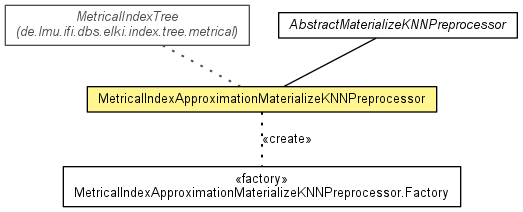

de.lmu.ifi.dbs.elki.index.preprocessed.knn
Class MetricalIndexApproximationMaterializeKNNPreprocessor<O extends NumberVector<? super O,?>,D extends Distance<D>,N extends Node<E>,E extends MTreeEntry<D>>
java.lang.Object
 de.lmu.ifi.dbs.elki.index.AbstractIndex<O>
de.lmu.ifi.dbs.elki.index.preprocessed.AbstractPreprocessorIndex<O,List<DistanceResultPair<D>>>
de.lmu.ifi.dbs.elki.index.preprocessed.knn.AbstractMaterializeKNNPreprocessor<O,D>
de.lmu.ifi.dbs.elki.index.preprocessed.knn.MetricalIndexApproximationMaterializeKNNPreprocessor<O,D,N,E>
de.lmu.ifi.dbs.elki.index.AbstractIndex<O>
de.lmu.ifi.dbs.elki.index.preprocessed.AbstractPreprocessorIndex<O,List<DistanceResultPair<D>>>
de.lmu.ifi.dbs.elki.index.preprocessed.knn.AbstractMaterializeKNNPreprocessor<O,D>
de.lmu.ifi.dbs.elki.index.preprocessed.knn.MetricalIndexApproximationMaterializeKNNPreprocessor<O,D,N,E>
- Type Parameters:
O - the type of database objects the preprocessor can be applied toD - the type of distance the used distance function will returnN - the type of spatial nodes in the spatial indexE - the type of spatial entries in the spatial index
- All Implemented Interfaces:
- Index, KNNIndex<O>, Result
@Title(value="Spatial Approximation Materialize kNN Preprocessor")
@Description(value="Caterializes the (approximate) k nearest neighbors of objects of a database using a spatial approximation.")
public class MetricalIndexApproximationMaterializeKNNPreprocessor<O extends NumberVector<? super O,?>,D extends Distance<D>,N extends Node<E>,E extends MTreeEntry<D>>
- extends AbstractMaterializeKNNPreprocessor<O,D>

A preprocessor for annotation of the k nearest neighbors (and their
distances) to each database object.
Used for example by LOF.
TODO correct handling of datastore events
| Methods inherited from class java.lang.Object |
clone, equals, finalize, getClass, hashCode, notify, notifyAll, toString, wait, wait, wait |
logger
private static final Logging logger
- Logger to use
MetricalIndexApproximationMaterializeKNNPreprocessor
public MetricalIndexApproximationMaterializeKNNPreprocessor(Relation<O> relation,
DistanceFunction<? super O,D> distanceFunction,
int k)
- Constructor
- Parameters:
relation - Relation to preprocessdistanceFunction - the distance function to usek - query k
preprocess
protected void preprocess()
- Description copied from class:
AbstractMaterializeKNNPreprocessor
- Perform the preprocessing step.
- Specified by:
preprocess in class AbstractMaterializeKNNPreprocessor<O extends NumberVector<? super O,?>,D extends Distance<D>>
getMetricalIndex
private MetricalIndexTree<O,D,N,E> getMetricalIndex(Relation<O> relation)
throws IllegalStateException
- Do some (limited) type checking, then cast the database into a spatial
database.
- Parameters:
relation - Database
- Returns:
- Metrical index
- Throws:
IllegalStateException - when the cast fails.
getLongName
public String getLongName()
- Description copied from interface:
Result
- A "pretty" name for the result, for use in titles, captions and menus.
- Specified by:
getLongName in interface Result- Specified by:
getLongName in class AbstractIndex<O extends NumberVector<? super O,?>>
- Returns:
- result name
getShortName
public String getShortName()
- Description copied from interface:
Result
- A short name for the result, useful for file names.
- Specified by:
getShortName in interface Result- Specified by:
getShortName in class AbstractIndex<O extends NumberVector<? super O,?>>
- Returns:
- result name
getLogger
protected Logging getLogger()
- Description copied from class:
AbstractPreprocessorIndex
- Get the classes static logger.
- Specified by:
getLogger in class AbstractPreprocessorIndex<O extends NumberVector<? super O,?>,List<DistanceResultPair<D extends Distance<D>>>>
- Returns:
- Logger